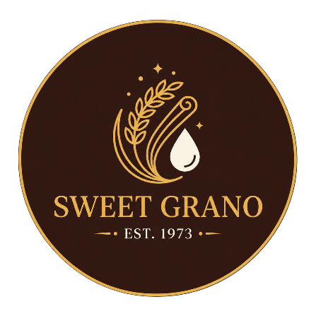
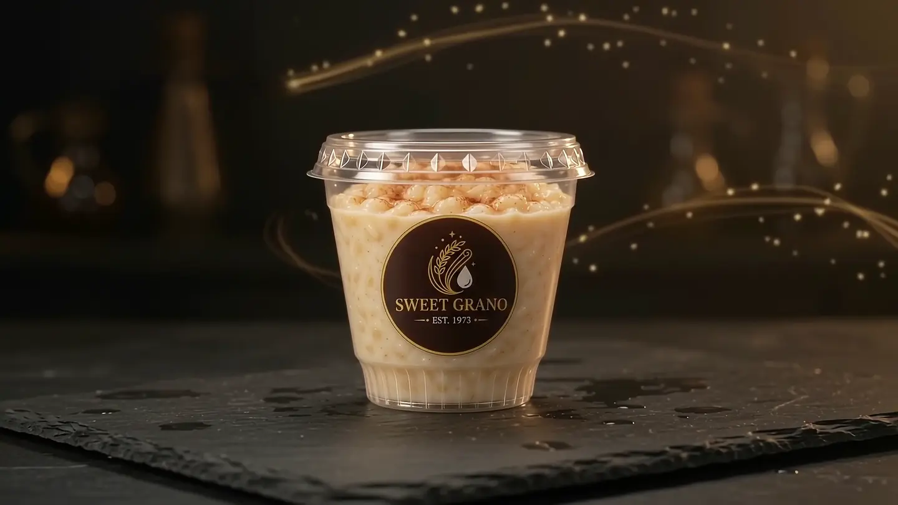

4 OZ
Mini
B/.1.50
Un detalle dulce para eventos, degustaciones y pequeñas celebraciones.

SWEET GRANOARROZ CON LECHE ARTESANAL Encuentra tu favorito ↗
✦ PEQUEÑOS MOMENTOS. DULCES RECUERDOS.
Arroz con leche cremoso, un toque de canela y una receta que se comparte de generación en generación.
Descubre nuestras presentaciones ↗01 / NUESTRAS PRESENTACIONES
Para un antojo, para ti o para compartir.
La receta de siempre, en tu tamaño ideal.
B/.1.50
Un detalle dulce para eventos, degustaciones y pequeñas celebraciones.
B/.2.75
Tu pausa favorita. La porción ideal para disfrutar cucharada a cucharada.
B/.7.25
Para poner en el centro de la mesa y hacer más dulces los encuentros.
TODO EMPEZÓ CON UNA RECETA
1973El cariño es el ingrediente
que se queda.
02 / NUESTRA HISTORIA
En 1973, Dorila preparaba arroz con leche para su familia y las reuniones de su comunidad en Volcán. A fuego lento, con paciencia y ese toque de canela que hacía sentir a todos en casa.
La receta pasó a sus hijas y después a nuevas generaciones. Hoy, Sweet Grano nace de esa memoria: conservar el sabor de siempre y darle una nueva forma de llegar a la mesa.
03 / LA ESENCIA
Cuatro ingredientes reconocibles.
Un sabor que no necesita más.
El pequeño grano que da nombre a nuestra historia.
La base de esa textura suave y cremosa.
El toque dulce que reúne todos los sabores.
Un aroma cálido que despierta recuerdos.
BUENO SABERLO
No. Mini, Individual y Familiar comparten la misma receta base de arroz con leche y canela; cambia el tamaño y la ocasión para disfrutarla.
El plan contempla conservación refrigerada a 5 °C o menos y entregas manteniendo la cadena de frío. La vida útil definitiva se validará antes del lanzamiento.
Sí, la receta contiene leche. Los ingredientes y la información final de alérgenos deberán figurar en el etiquetado del producto.
Sweet Grano se presenta como un proyecto académico. El catálogo y el cálculo de importes son demostrativos: todavía no se reciben pedidos ni pagos. El plan propone una futura cobertura en Tierras Altas, Boquete y David.